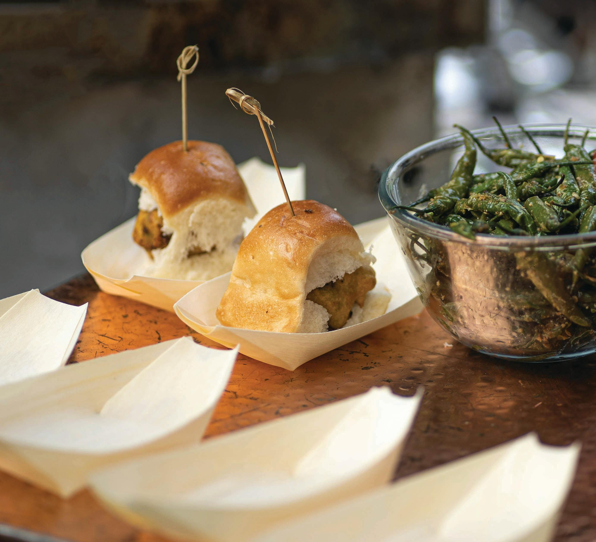

Famous Foods of Maharashtra
Vada Pav

Vada Pav Recipe:
- Ingredients:
- 4-6 pav (bread rolls)
- 2 large potatoes, boiled and mashed
- 1 teaspoon mustard seeds
- 1 teaspoon turmeric powder
- 1 teaspoon cumin seeds
- 1 teaspoon red chili powder
- 1 tablespoon oil
- Salt to taste
- 1 cup besan (gram flour)
- Water to make batter
- Oil for frying
- Instructions:
- Heat oil in a pan, add mustard seeds, cumin seeds, and turmeric powder.
- Add mashed potatoes and red chili powder. Mix well and cook for a few minutes. Allow to cool.
- Form potato mixture into balls.
- Prepare a batter with besan and water. Dip potato balls in the batter and fry until golden brown.
- Assemble Vada Pav by placing a vada (potato ball) inside each pav. Serve with chutneys and fried green chilies.
Pav Bhaji

Pav Bhaji Recipe:
- Ingredients:
- 4-6 pav (bread rolls)
- 2 cups mixed vegetables (potatoes, carrots, peas, etc.), boiled and mashed
- 1 large onion, finely chopped
- 2 tomatoes, chopped
- 1 tablespoon ginger-garlic paste
- 2 teaspoons pav bhaji masala
- 1 teaspoon turmeric powder
- 1 teaspoon red chili powder
- 1 tablespoon butter
- Salt to taste
- Coriander leaves for garnish
- Instructions:
- Heat butter in a pan, add onions and ginger-garlic paste. Sauté until onions are golden brown.
- Add tomatoes, pav bhaji masala, turmeric powder, and red chili powder. Cook until tomatoes are soft.
- Add mashed vegetables and mix well. Cook for a few minutes, adding water as needed to adjust consistency.
- Garnish with coriander leaves and a dollop of butter.
- Serve hot with buttered pav (bread rolls) toasted on a griddle.
Puran Poli

Puran Poli Recipe:
- Ingredients:
- 1 cup chana dal (split chickpeas)
- 1 cup jaggery, grated
- 1 cup all-purpose flour
- 1/2 teaspoon turmeric powder
- 1/2 teaspoon cardamom powder
- 1 tablespoon ghee
- Water as needed
- Salt to taste
- Instructions:
- Cook chana dal in water until soft. Drain and mash.
- Mix mashed dal with jaggery, turmeric powder, and cardamom powder. Cook until thickened and allow to cool.
- Prepare a dough with all-purpose flour, ghee, and water. Divide into small balls.
- Flatten each dough ball and fill with the dal mixture. Roll out into thin circles.
- Cook each poli on a hot griddle until golden brown on both sides.
- Serve warm with ghee or milk.